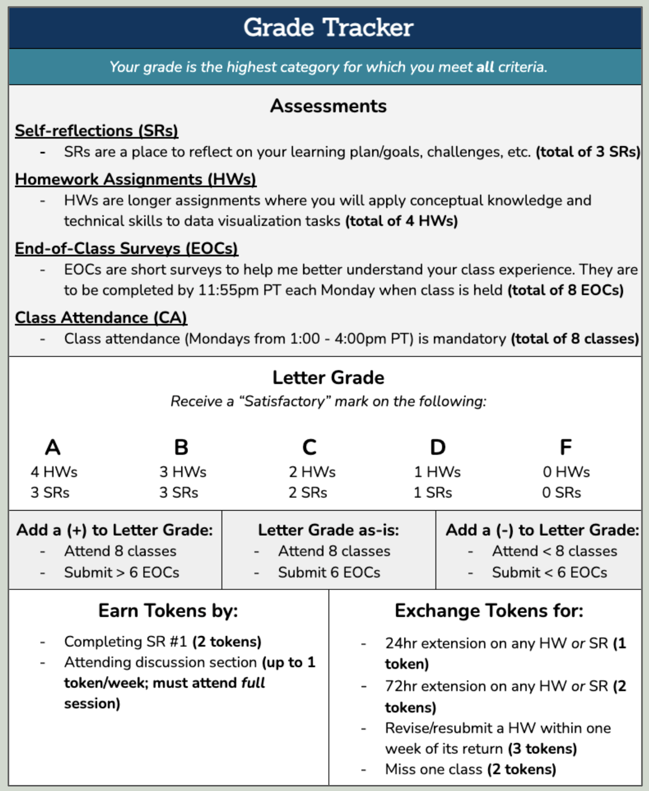
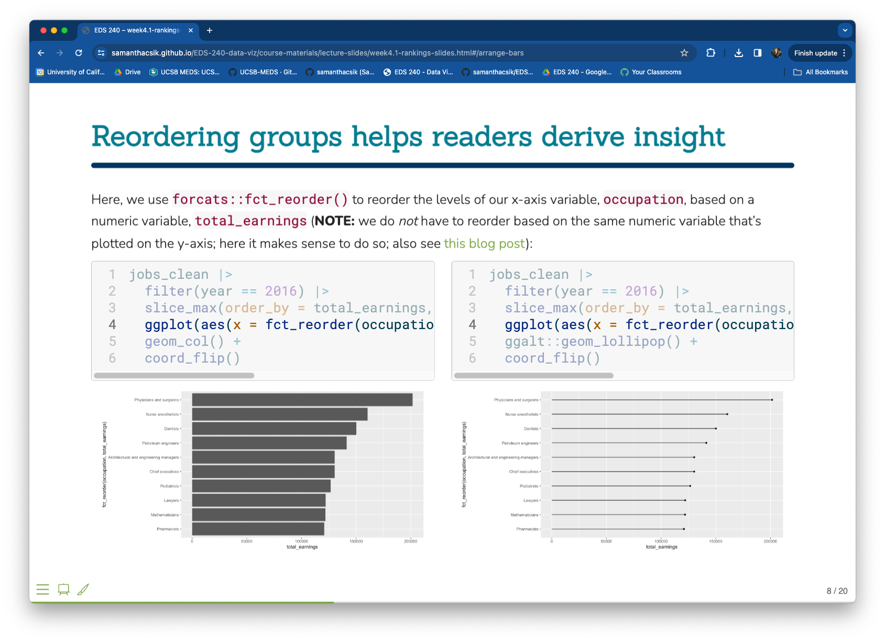
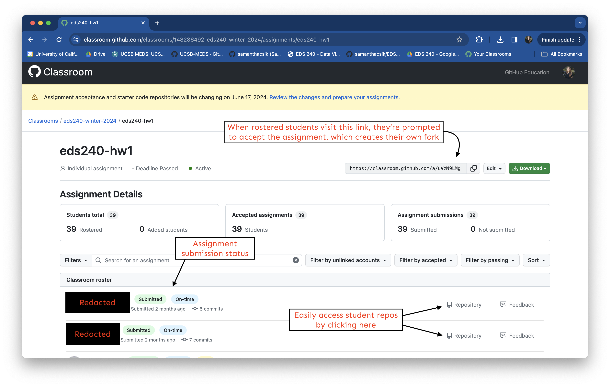

![]()

I had initially intended for this to be a short, high-level reflection of what it was like to build and teach a new (to me) grad-level course. I decided part-way through, however, that this might be the best time to jot down some of the more nitty-gritty details (planning timelines, pedagogy, classroom management, curriculum, etc.), and as a result, it’s turned into a short novel. I hope other new educators might find some of these details helpful!
I’m eternally grateful to the many colleagues, educators, and online strangers who have taken the time to share their own experiences, advice, and materials – the open data science community is a real gem, and I’m so lucky to be a part of it.
TL;DR I recently developed and taught a grad-level course on data visualization & communication! It was incredibly challenging and equally rewarding. I began the planning process by defining the course learning objectives, which ultimately guided what topics to cover and how to design homework assignments. I implemented a version of specifications grading, where students have the opportunity to use feedback to revise and resubmit assignments for an improved score. I built out a course website which housed all course-related content in one, easy-to-access place. Throughout the course, we prioritized transparency, goal-setting, and opportunities for instructor, TA, and peer-to-peer feedback on student-created data visualizations. I learned so much from other educators, both those that I know personally, and those who so willingly share their resources and ideas online.
It felt like running a marathon at sprint speed at times (okay, almost the whole time), but I just finished teaching my first(!!) graduate-level course for the Master of Environmental Data Science (MEDS) program – I’m so exhausted and so proud and I can’t wait to (hopefully) do it again next year. While I’ve witnessed many incredible colleagues successfully teach really rad courses in this program since it first began in 2021, I still felt like I was stepping into a large unknown. Now that I’m through the other side, I wanted to reflect on my process, experience, and considerations. I’ve learned so much (seriously sooooo much) from other educators who have openly shared their materials and ideas online, and writing this here is my small way of trying to to do the same.
First, some context
The MEDS program is an 11-month professional masters program, administered by the Bren School of Environmental Science & Management in partnership with the National Center for Ecological Analysis and Synthesis (NCEAS). The program is designed to provide data and technical skills to students with prior experience in the environmental sciences, preparing them for a workforce where data and programming literacy is increasingly becoming the norm.


Of course we have hex designs for each of these departments / programs . From left to right: Bren School of Environmental Science & Management, Master of Environmental Data Science (MEDS), National Center for Ecological Analysis and Synthesis (NCEAS). If you’re new to the R community, hex stickers often accompany popular packages and adorn the laptop lids of many R users.
EDS 240: Data Visualization and Communication is MEDS a “core” course, meaning students need to enroll in and pass the course as a step towards earning their degree. While I’m not new to teaching – in fact, my role within the MEDS program is primarily centered around developing and teaching short (typically 1-3 hours) workshop-style courses that supplement the core curricula – taking on a 4-unit core course was certainly new territory. When the opportunity to teach EDS 240 opened up, I was pretty excited and also really nervous. Sure, I was familiar with the idea of data visualization – I’ve created my fair share of ggplots, discussed / admired / critiqued plenty of viz, and I’ve made good use of some of the most popular online data viz resources – but I certainly would not consider myself an “expert” in this field or even in using {ggplot2} + extension packages in R.
My only real guidelines were to beef up the technical skills / lessons – the prior version of this course was highly conceptual and didn’t involve much programming. Other than that, I was free to do what I wanted. And so, I set off on building my very first grad-level data science course.
Early logistics: class schedules & enrollment
Some action items needed to be addressed in advance of even beginning to plan the course, including submitting my desired meeting times and setting the maximum student enrollment – Bren’s Academics team would use this information to work on the absolutely insane puzzle that is class scheduling (they are truly rock stars).
I chose to hold lecture once a week for 3 hours – my vision for the class was a mix of lecture-based conceptual content and applied coding exercises, and I hoped that this longer block of time would allow me to switch back and forth between the two more easily than in a shorter 1.5 hour-long class that met twice per week.
I set my maximum enrollment to 40 students and ultimately ended up with 37 – this included all 31 MEDS students, 4 Master of Environmental Science & Management (MESM) students, and 2 non-Bren students. Non-MEDS students were required to reach out to me and confirm that they met course prerequisites (they needed to have taken at least one prior course taught in R + have familiarity with git / GitHub) before receiving an enrollment code.
Students would also be required to enroll in one of two 50 minute-long discussion sections – these are new to MEDS this 2023-2024 academic year and each instructor has used them in slightly different ways. I had no idea how these would look until I got farther along in the course planning process (more on that later).
My preparation timeline
I spent about 7 months sincerely preparing for and teaching EDS 240 (not including the application and interview process). I recognize that’s a long runway and that not every instructor is afforded the time or has the capacity to do the same. As an existing employee of the MEDS program whose responsibilities are largely centered around teaching, I was allowed the time and space to think deeply about this course. I’m a super nervous planner when it comes to anything work / teaching-related (hello, imposter syndrome!), so I personally needed this prep time to feel like I had things (sort of) under control. Here’s how that timeline roughly shook out:
Note: I’m also including information about the application process here – it was totally foreign to me, and while this is specific to UCSB / Bren, I imagine other institutions may follow a similar process.
April 2023: Submitted my application for Teaching Positions, Bren School of Environmental Science & Management – this is a general call for Unit 18 Faculty (often referred to as Lecturers). Applications require a cover letter, CV, Teaching Statement, and three references. You are asked to specify which course(s) you are interested in teaching.
June 2023: Interviewed – this hour-long interview began with a 10min teaching demo followed by ~10min of Q&A. Your demo must be related to the subject area of the course you’re intending to teach (i.e. in my case, it needed to be about data viz). I chose to do a live coding demo, since my vision for EDS 240 would involve a lot of that (see Nederbragt et al. (2020) for more on this teaching technique).
September 2023: Signed my contract. After negotiations, I ended up at 50% time in my typical full-time role (Data Training Coordinator, more formally classified as Academic Coordinator I), 33% time as Unit 18 Lecturer, and 17% time for curriculum development. It’s important to note that these appointments are only for the quarter in which the course is taught (i.e. winter quarter, Jan - Mar 2024). The lecturer salary scale is higher than than my current full-time salary, so this split appointment meant I would earn a bit more during winter quarter. Once signed, I got started working on the course syllabus.
October - November 2023: While my appointment didn’t officially start until January, I spent about 30-40hrs/week prepping for the class during fall quarter (which is a lot of time…this is not an attempt to applaud “the grind,” but rather reflect how this experience played out for me). I focused primarily on the syllabus, grading structure, drafting high-level outlines of weekly topics, building the skeleton of the course website, and learning other necessary classroom management tools (I’ll elaborate more on all of these in the next sections). I was able to prep ~2 of 4 homework assignments (plus jot down ideas for others), and even a couple early lectures. I also spent ~30hrs/week teaching my typical fall workshops, reviewing / updating materials for EDS 296-1W: Intro to Shiny (a 2-day short course that I also teach in winter quarter), and other MEDS administrative stuff.
December 2023: Oof, this was definitely the hardest month out of the whole experience – while most folks were winding down after a busy fall quarter, I felt like I had to ramp up (more so than I already had been). I was also tired from a stacked fall and wanted so desperately for a break that I felt like I couldn’t really take. I was also coming to terms with the fact I would absolutely not have the whole course planned / materials created ahead of the January 8th start date ( yes, that was incredibly naive thinking on my part). I did hope to have materials and plans for the first 6 weeks of the quarter largely created – I had a number of other non-EDS 240 events, teaching, and responsibilities during this first half of the quarter and I was genuinely worried about not having enough time to do it all.
January - March 2023 (winter quarter): Here we go! By this point, I had weeks 1-4 fully planned, weeks 5-6 outlined(ish), and weeks 7-10 were largely untouched (aside from having scheduled Allison Horst’s guest lecture on using Observable JS to create interactive viz during week 9!). I tried my best to work ahead and continue prepping future lectures / assignments / etc. but this wasn’t totally sustainable. By ~week 5, I was prepping each lecture the week before delivering it. That said, I had compiled so many resources and jotted down so many random ideas as I came across things, so creating new lectures did get a bit easier as time went on.
Building the course
I very quickly realized that building a course involves a whole lot more than just figuring out what topics to teach. My initial TODO list looked something like this:
- Build the course syllabus (including learning objectives, topics, schedule, policies)
- Decide how to assess student success (i.e. grades)
- Determine how to build & organize course materials
- Create & manage assignments + provide feedback
- Plan TA responsibilities
I’ll walk through each of these in a bit more detail, then wrap up with some things that worked particularly well, things I’d like to do differently, and other musings.
1. Build the course syllabus
This was probably the most intimidating part, given that it’s the one place to comprehensively describe all aspects of course proceedings – from (tentative) topics covered to assignment due dates, and grading schemes to course policies. I chose to begin with defining the course’s learning objectives, i.e. what I wanted all students to feel comfortable with and be able to execute on by the end of the course. It was really important to me that I blended technical skills (e.g. using {ggplot2}) with information design theory and a solid conceptual understanding of what makes a good data visualization (i.e. transferable knowledge, regardless of the programming language / data viz tool of choice).
After a lot of iterating, seeking feedback from a mix of past MEDS students (now NCEAS data scientists) and other NCEAS educators, I ended up with a list of six learning objectives (check out the syllabus to see what they are!). Next, I began mapping out tentative topics by date, being mindful of holidays (no lectures during weeks 2 & 7), large non-EDS 240 deadlines (e.g. MEDS Capstone faculty reviews), and the skills we’d need to cover ahead of distributing each new homework assignment. This schedule was a detailed draft at best – topics were shifted around a bit or dropped entirely leading up to the start of the quarter and even during the quarter (once I had a better understanding of how much I could realistically cover in a given class).
After these pieces were drafted up, I started filling in the remaining gaps: course policies, grading structure, student resources, etc. The syllabus was in a constant state of revision right up until the start of the course, but getting that first draft squared away felt like a huge accomplishment and it served as my North Star once I finally began creating course materials.
2. Decide how to assess student success
A conversation Nate Emery, the STEM Education Coordinator at UCSB’s Center for Innovative Teaching, Research, and Learning inspired me to explore alternative grading approaches for this course. He had passed me a copy of Grading for Growth: A Guide to Alternative Grading Practices That Promote Authentic Learning and Student Engagement in Higher Education, by David Clark & Robert Talbert (also check out the Grading for Growth Substack) and some other awesome case studies / resources, which I dove into for the better portion of August 2023. I decided to implement a version of specifications (specs) grading for EDS 240. Generally speaking, specs grading refers to:
“an alternative grading method where instructors create a list of specifications that describe the qualities and characteristics of a successful submission for an assignment. Student work is graded holistically based on those specifications, earning a single mark: “Satisfactory” or “Not Yet”. Students have the chance to use feedback by revisiting and resubmitting for full credit.”
-expert from “Grading for Growth: A Guide to Alternative Grading Practices That Promote Authentic Learning and Student Engagement in Higher Education”, by David Clark & Robert Talbert
Why implement something like specs grading? “Traditional” grading (assigning points to one-time assessments and aggregating those points into a letter grade for a course) comes with a variety of challenges (summarized from Grading for Growth):
- It lacks feedback loops – there are (often) no reattempts or revisions of work based on feedback, making it difficult for students to demonstrate (and instructors to assess) learning or growth
- It disproportionately benefits students who learn fast, or who already have familiarity with the material
- Traditional grades are bias-prone (e.g. awarding participation points, granting deadline extensions)
- It can be demotivating and discourage students from learning for its own sake (motivation often comes from “chasing the A,” rather than learning and growing)
- It can promote unhealthy student-instructor relationships
In EDS 240, students earned either a “Satisfactory” or “Not Yet” mark on each assignment based on whether or not they met all rubric specifications (which are provided alongside each assignment). Students could trade in tokens to revise / resubmit assignments based on instructor feedback, for assignment extensions, or to miss class. Students earned tokens (primarily) by attending discussion section each week. The Grade Tracker below, summarizes the different types of assignments, how students can earn and use tokens, and how to calculate your course grade based on the number of “Satisfactory” grades received:

The EDS 240 Grade Tracker was inspired by and adapted from the syllabus for BIO SCI E106 Lec A (Processes in Ecology and Evolution, Winter 2022), by Dr. Celia Faiola & Dr. Celia Symons
I would be lying if I said that I wasn’t incredibly nervous to try this out. While all the literature I had explored got me super jazzed about the idea of specs grading, it is quite different than what our students are used to…and change can feel disruptive. I spent a full hour of our first (3hr-long) lecture laying out this grading structure, the accompanying token system, and expectations (and of course, answering many questions).
Some students were understandably uncertain about the specs grading + token system at the start, but I ultimately received overwhelmingly positive feedback. I’ll share just a few student quotes, pulled from their mid-course and end-of-course self-reflections:
“I really appreciated the alternative grading style as it took a lot of pressure off of me, as I tend to be a bit of perfectionist. So without the number and letter grades on individual assignments, it allowed me to enjoy the work more and potentially create better visualizations in the process.”
“I can’t quite put my finger on it, but the tone of the course just really feels like it promotes easy learning. The expectations are certainly high, but are given in a way that allows room for growth at everyone’s particular pace. Even though I feel like I’m spending the same amount of time on this course as others, it doesn’t feel nearly as stressful. It might have to do with the grading. I really enjoy not having my performance pinned to a letter or number grade that can artificially inflate the stakes.”
“…As for the tokens and grading system, it was nice to be very clear on what was needed to succeed in the class and be able to decide where to spend tokens as needed at tough parts of the quarter.”
From my (an instructor’s) perspective, this grading system was really wonderful for a number of reasons:
- I did not have to haggle over any points – not even once!! (because points don’t exist as they do in traditional grading systems)
- Students respected the clear expectations set at the start of the course and in the assignment-specific rubrics – no one expressed frustrations (at least to me) when they needed to use tokens to submit an assignment past the deadline or to revise / resubmit an assignment after receiving a “Not Yet” score
- Many students used tokens for no-questions-asked extensions throughout the quarter. I do think this generally resulted in better overall submissions, rather than rushed and incomplete work. It also meant that I didn’t need to worry about how many points / what percentage to deduct for late submissions.
- Students demonstrated marked improvements when they chose to revise / resubmit assignments that received a “Not Yet” score
Importantly, student success within this grading system relies on thorough instructor feedback.
While I did spend a lot of time providing detailed constructive feedback on assignments, I certainly saved myself time trying to assign / subtract points across assignments. Ultimately, concentrating my efforts on providing constructive criticism was a lot more fun for me and (I hope) much more helpful for students in their learning journeys.
Maybe you’re thinking, “this seems like a lot to keep track of…” and to be fair, it sort of is. But a nicely organized Google Sheet helped tremendously in my efforts to keep track of attendance, tokens earned / used, and completed assignments. Students were required to fill out a Google form (also adapted from Drs. Fiola & Symons’ BIO SCI E106 Lec A syllabus) when redeeming tokens, which acted as an “official record” (I did end up making lots of notes in my Google sheet when students used tokens, since this proved to be an easier place for me to reference).
Google Sheets to the rescue! I was able to keep grades and tokens organized with this grade tracker (template).
3. Determine how to build & organize course materials
I’m a total sucker for some good organization, so figuring out how I was going to package and present course materials to students was my favorite type of puzzle to solve. I ended up with a Quarto website that houses everything from lecture slides, to assignments, to resources and more.
Website layout
My goal for the website was to keep things simple, predictable, and also aesthetically-pleasing (for my own happiness, if nothing else). A couple simple design choices that I made, which I felt worked well:
- Materials were organized by week (with each week getting its own page) under the course materials drop-down menu
- Weekly materials followed a predictable format with the same four sections: Pre-class Prep, Lecture Materials, Discussion Materials, and Assignment Reminders
- Lectures were divided into multiple slide decks, which forced me to take breaks throughout class (I needed it, and students definitely needed it – 3 hours is long!).

Scrolling through week 1 materials on the EDS 240 course website
Slide deck development
Lecture materials – both conceptual and technical – were packaged as individual slide decks. I debated for a while about how to create these, but ultimately opted to build them with Quarto. This was largely driven by the desire to embed the code used in live-coding exercises directly in the slides for easy reference.
I tend to pack a lot of explanatory information and code in my teaching materials for a couple of reasons:
- it makes it easier for students to go back and review content after class, or catch up if they happen to miss a lecture
- they serve as my own teaching notes and make reviewing materials ahead of teaching a bit easier
- I don’t typically show all slides while teaching – anytime we encounter a slide with code on it, we’ll instead pop over to RStudio for a live-coding exercise
- the slides offer both textual explanations and the code “key,” should students need to refer to it at any point during lecture (e.g. if they fall behind during live-coding, or need to copy a code chunk to move forward because they can’t quite spot the typo)

An example of a slide that I wouldn’t necessarily show on screen, but rather move to RStudio to live-code and talk through. The textual content serves as information for students to refer back to, and the embedded code makes copying / pasting easy should anyone fall behind (I always encourage learners to type as much as they can by hand during class).
Some potentially helpful tips:
- create a stylesheet to maintain a consistent look across all slide decks (it also facilitates faster slide development)
- use an iPad or second device while teaching – I absolutely do not memorize all the code we cover during class and I need an easy way to reference it while live-coding. My laptop / RStudio will be visible on the screen for students to follow along with, while I reference the slides / code on my separate device
Click around the EDS 240 course website if you’re interested in exploring further!
4. Create & manage assignments + provide feedback
Creating assignments
This was honestly the part I dreaded the most. While I’ve taught my fair share of workshops, I’ve never had to actually come up with creative and effective ways to assess student learning – it was super intimidating and they took wayyyy longer to put together than I initially thought they would. Some things I considered for each assignment:
- which of the course learning objectives would each assignment address?
- how much is a reasonable amount of work to ask of students given the submission schedule (they had ~2 weeks per assignment)?
- how can we shift assessments to be more learner-centered and less susceptible to plagiarism in the age of generative AI tools (e.g. ChatGPT)?
While I won’t go into specific tasks for each assignment (you can check them out on the course website though!), I really enjoyed asking students to both complete a coding task and describe in writing their considerations, workflow, design choices, etc. which (I hoped) would put a greater focus on the decision-making process. I definitely felt a bit of validation when a student responded to the question, “How have your learning goals changed? Have they stayed the same?” (from the mid-course self-reflection):
“I feel that this class has greatly allowed me to progress towards my learning goals, but in a different way than I originally thought. My initial goal in taking this class was to get better at
{ggplot2}and other data viz packages. While I have definitely been doing this, I have much more so been progressing in my learning of how to approach data visualization and then using packages like{ggplot2}as a tool to execute this. My learning goals have sort of shifted for the better in a way that I wasn’t really anticipating.”
Managing assignments
All assignments were posted to the course website, and depending on the assignment / task, students were asked to submit completed work either (a) via GitHub Classroom or (b) by submitting rendered or published .qmd files:
(a) GitHub Classroom
Self-reflections and parts of the first two homework assignments were distributed and managed using GitHub Classroom, a service that allows educators to create and manage digital classrooms and distribute / track assignments. While there was a bit of a learning curve, I ultimately found it to be a fairly intuitive way to track assignment submissions. In a nutshell, GitHub Classroom allows you to easily distribute assignment repositories (containing template files, starter code, etc.) as forks to all rostered students. I got started by following these instructions (though note the upcoming changes to assignment repos).

A view of the teacher dashboard, where I’m able to access each of my students’ repositories for a particular homework assignment.
For assignments submitted via GitHub Classroom, we provided feedback largely by copying and commenting on a submitted .qmd file following this workflow:
- make a copy of a submitted
.qmdfile in the repo - add comments such as,
# SC feedback: some feedback on code / approach here - push the new file back to GitHub and prompt students to pull changes
- ask students to search for
# SC feedbackto identify all comments
(b) Submitting rendered or published .qmd files
The final course assignment asked students to create a series of visualizations using data of their choosing. This large task was broken down into smaller pieces and spread across all four homework assignments (so students were working on it throughout the entire quarter). For this course-long project, we asked students to create their own GitHub repositories (i.e. not using GitHub Classroom), where they would do all related work. Final projects were submitted either as published Quarto documents (using GitHub Pages) or as published blog posts on student personal websites. Intermediate submissions (i.e. those that were a part of the first three homework assignments) were submitted as rendered HTML files, which we could open and assess via the web browser. We provided feedback for these submissions by opening issues on student repos.
5. Plan TA responsibilities
I was so lucky to have an incredible teaching assistant (TA), Sevan Esaian, to collaborate with throughout the quarter. His efforts in the following areas contributed largely to my own success while teaching and student success throughout the course:
Lectures & student support
A major challenge when teaching technical skills (e.g. coding) is assisting students who encounter error messages or other troubleshooting roadblocks while also delivering content at a fair pace. Sevan attended lectures and assisted students who needed an extra set of eyes on troublesome code. We found that it was minimally disruptive for students to meet Sevan, with their laptops, in the back of the classroom when they needed help.
Discussion sections
Sevan also taught weekly discussion sections and took lead on planning much of the content and activities. They went something like this:
- Weeks 1-4: I had extra content that I ended up having to cut from lecture, but felt was important for students to think about / get some additional practice on (data wrangling and ggplot practice, writing alt text, intro to customizing ggplot themes). We shuttled this content to discussion section for Sevan to cover.
- Weeks 5-9: These weeks were a mix of introducing additional chart types that hadn’t been covered in lecture, and importantly, having students share in-progress data viz (part of their final course assignment) to receive constructive feedback from peers.
- Week 10: Students presented their final projects!
Grading
Sevan and I split grading. I read and wrote responses to student self-reflections, while Sevan graded homework assignments 1-3 (along with any that were revised / resubmitted for a regrade), in accordance with the provided rubrics. I provided written feedback to all students on homework #3 (separate from their grades), since this assignment asked for the first complete draft of all data visualizations which would be submitted as part of their final course assignment. I also chose to grade these final assignments (along with any regrades), in part because I wanted to understand where tweaks could me made for next year, and also because I was super excited to dive into what students had created throughout the quarter.
Other musings
There’s so much more that I learned along the way, but that didn’t quite fit under the above sections. I’m listing a spattering of thoughts here for anyone interested in doing just a bit more reading
A few more tools to consider using
I already mentioned a fair number of tools that made teaching this course possible (R/RStudio, git/GitHub, GitHub Classrooms, Google Sheets & Forms, Quarto), but there are a few more that are worth noting:
The MEDS program uses Slack for internal staff / instructor communications, and also for instructor / student communications. Each course has its own dedicated channel (e.g. #eds-240-data-viz) where instructors can share updates, resources, and answer student questions.
UCSB recently made the switch to Canvas LMS as their default online learning platform – some instructors use this to host course materials, share assignment grades, administer quizzes, etc. I thought I might use it to share grades with students throughout the quarter, but given the Satisfactory / Not Yet nature of assignment grades, it was easier just to communicate that information either via direct messages on Slack or as GitHub issues (on private repos).
Instructors will eventually need to submit final grades – UCSB uses a web application called EGrades, though I imagine this will differ by institution. Making note of it here, because you’ll want to confirm that you both have access to whatever system your university uses and also understand how to use it (this was my first time, so I had a bit of learning to do!).
Some things that worked well
Specs grading! – I would absolutely implement it again (for this course, and / or others). While it does require more work up front (e.g. building clear assignment rubrics, determining exactly what a student needs to do to earn a particular grade in the course), I really do think it allowed me to focus on the more fun (and important) parts of teaching (e.g. providing constructive feedback on assignments, soliciting and acting on student feedback throughout the course)
Randomly assigning new “learning partners” for each lecture – learning partners were a mix of accountability-buddies, people to help troubleshoot with, and group mates for any in-class activities. I was originally motivated to facilitate student mixing (folks tend to sit in the same seats with the same people throughout the year) and encourage students to help one another problem solve. These were super popular – students consistently requested more opportunities to engage with their learning partners throughout the course. I also received written feedback from non-MEDS students that it made meeting people and integrating with the MEDS cohort much easier.
Providing the dates that each homework would be assigned and due in the syllabus (and on day 1 of class), which helped everyone plan out their quarters. Students were juggling two other courses, plus work on their capstones (along with any other jobs, personal matters, life).
Pre-, mid-, and end-of-course self reflections were such a great way for me to learn about students (on a professional and personal level) and importantly, encouraged them to both set their own learning goals and check in on their progress towards those goals throughout the quarter. Sending so much appreciation to An Bui, who originally crafted these reflections for her environmental stats course.
Spreading out work for the final assignment across the entire quarter allowed for lots of feedback (from myself, Sevan, and peers). It also provided more time for students to think deeply about their data, pivot if necessary, and experiment with different graphic forms, design approaches, etc. A few student quotes in response to the question, What is one thing that you really liked about this course, and why? (from the end-of-course self reflection):
“I really liked how the project was scaled. It was super useful to start working on homework 4 in the first couple of weeks because by the time that we were ready to really turn something in we had become very familiar with it.”
“I really liked how often we showed off our visualizations to the class and the instructors and how the homework assignments built on each other. There were plenty of opportunities for feedback and implementation of that. In most courses, it feels like you submit an assignment, receive feedback, and then don’t touch it again.”
“I really enjoyed the way that discussion section was structured. In the first half of the quarter, when we were still learning the basics it was very helpful to learn new/go over concepts in the discussion format. And then, when we started sharing our own visualizations and giving feedback I found that super helpful to understand what did or did not work for an audience unfamiliar with my dataset. It really helped me refine my plots for HW 4”
Saving all the awesome resources that I came across while building lectures, and adding them to the course website – I was motivated by slightly selfish reasons (I didn’t want to lose track of the bazillion tabs I had open at any given time), but it was also a great place to point students to when they were looking for a place to start or resources on a particular topic.
Asking students to complete short surveys at the end of each class, which were an easy way for me to quickly assess areas of confusion and seek feedback while things were fresh in everyone’s minds (completing these also counted towards their course grade). I tried my best to address recurring points of confusion by following up with further explanations and resources in the class Slack channel. Survey questions were as follows:
- Pacing was ___ (multiple choice: too fast, too slow, just right)
- Today, I felt ___ (multiple choice: engaged / focused / excited, disengaged / distracted / not very excited, neutral / somewhere in the middle)
- One thing I feel that I have a good understanding of now is ___ (short answer)
- One thing I need more practice with to feel comfortable is ___ (short answer)
- Anything you want us (Sam & TA) to know about your current learning situation? (optional; short answer)
Some things to improve
Shorten lecture, or introduce more frequent or longer breaks. I received a number of comments from students in their self reflections that it was often difficult to maintain focus towards the end of our 3 hour-long weekly lecture. I’m a bit reluctant to switch to shorter lectures that meet twice weekly just yet, because from a teaching perspective, the single longer meeting time offers a couple important benefits: (a) it affords me the time to present conceptual content, then demonstrate how to apply it in our coding practice immediately afterwards, (b) as soon as I finished my weekly lecture, I could turn my attention to prepping for the following week (this was particularly helpful this first year, while I was in a constant state of curriculum development). I do see a path where I keep the 3hrs 1x/week schedule by adding in more breaks and streamlining lecture material (see below).
Streamline / cut lecture content. I almost always overestimate how much content I can fit into any given time period, especially when live-coding / technical instruction is involved – inevitably, there are lots of (great) questions and troubleshooting, and my overzealousness leads to more content than is reasonable. By carefully considering what content to trim and / or rearrange, I’m hopeful I can introduce more frequent or longer breaks.
Create template scripts / .qmd files for students to code along in. Each student created their own GitHub repository to house all the code we’d write together throughout the quarter. Overall, I loved this setup – it kept the collective EDS 240 materials organized in one place and was an opportunity to practice repository management and version control. Next time, I’d love to provide template .qmd files with YAMLs and section headers (and maybe even some starter code for particular exercises) already filled out – I think this would help a bit with time management (it takes a bit of time to set these up together) and also help us all stay organized as we move from exercise to exercise throughout class.
Move some data wrangling to pre-class prep. Year after year, students have requested more in-class data wrangling practice across all courses. I started the quarter off by live-coding my way through all data wrangling (ahead of our in-class data viz practice), but it ultimately took up a lot of really valuable time that I preferred to spend on data viz itself. One student eventually suggested that I provide the wrangling code ahead of time, require students to review it on their own as part of their pre-class prep activities, then reserve ~10min for answering any questions in class. This seemed to work quite well, and I’m excited to try it out a bit more next year. I’ll likely still plan to do a bit of in-class wrangling at the start of the quarter, or if there are particularly new methods that I’d like to introduce.
Allow myself more time to review materials ahead of each class. This one may seem a bit silly, but it’s an important reminder for my future self! I had built a lot of content before the course began, and I spent most “down time” throughout the quarter trying to prep ahead. This meant that I’d often only start reviewing upcoming lecture materials the Sunday evening before teaching on Monday…each Sunday, I’d tell myself that it was plenty of time, and each Sunday I’d realize that it most certainly was not. I stressed a lot about relearning the content, fixing code errors that I hadn’t caught when I first built the materials, and frantically looking for more resources to better understand things ahead of questions I thought might come up in class. I am totally hopeful that this will get easier each time I teach the course, but did want to note this as an important consideration for anyone who may be teaching something for the first time.
Some final thoughts on teaching, more generally
Teaching anything requires sooo much learning, both on the subject matter side and importantly on the pedagogical side. I knew that I’d be spending a whole lot of time diving into the (overwhelmingly massive) field of data viz, but the sheer amount of time I spent figuring out exactly how I would lead this course caught me by surprise. I’m honestly really proud of how it all turned out, and I credit that largely to the initial pedagogical planning (please also find the names of those who helped me on this journey in the next section!).
Teaching is a really vulnerable act! No matter how much prep you do, you’ll get asked questions that you don’t know the answers to, be confronted with situations you don’t quite know how to navigate, and likely make (many) mistakes. I prepped so much, in part because I was scared of making any mistakes (which I of course made anyway). This quarter was a great reminder that transparency is key, and that more often than not, students are really understanding. Taking a bit time to respond to any outstanding questions in the class Slack channel, or explaining the reasoning behind policy decisions went a long way.
You’re going to get a lot of feedback. Some of it will certainly help to improve your course and teaching approaches. But it’s also okay to consider then ignore feedback too. Ultimately, we are tasked with thinking really long and hard about what topics to teach, how to teach them, course policies, etc. and we make deliberate decisions in our planning. It’s okay to stand by those decisions. While not teaching-specific, I really appreciated Dorie Clark’s piece on When it’s OK to Ignore Feedback (Harvard Business Review).
Burnout is real. Find ways to take care of yourself. There was a point around week 7 where I wanted to think about anything other than putting together my next lecture. The remaining topics really excited me, but I was struggling mightily to focus. I stressed for a while about it, but eventually found myself some grace. I spent a couple days working on a completely unrelated project, walked my dog in the middle of the work day, took slightly longer lunch breaks, and maintained my typical workout schedule. It was a much needed change of pace that helped me find my groove again.
It takes a village
This may (definitely) be sappy, but I truly would not be where I am or doing what I’m doing without the support of incredible friends, colleagues, and the online data science community. You all make learning such a joy and I am truly grateful to have so many brilliant educators and thinkers to look up to. There are too many names to list here, but I do want to give shout outs to a few folks who made getting started on this class a bit less intimidating:
Figuring out where to start is often the hardest part, and finding inspiration from educators who openly shared their materials online was a true blessing. Many many thanks to Meghan Hall and Andrew Heiss, whose courses (CMU 36-315: Statistical Graphics & Visualization & PMAP 8101: Data Visualization with R) provided some much needed inspiration and helped me find my feet. I reference a whole lot of work by Cédric Scherer, but was especially grateful to come across his jam-packed 2-day workshop, Graphic Designs with ggplot2, from rstudio::conf(2022).
Teaching is truly an art, and I’m lucky to be surrounded by folks who think really hard about how to do it well. Thank you to Nate Emery, who first introduced me to the concept of alternative grading and gave me the resources and encouragement to give it a try myself. To my colleague, dear friend, and biggest hype woman, An Bui, who is both a brilliant data scientist and deeply intentional educator. Adopting her student self-reflection exercises was one of my favorite parts of this course. And of course, to Allison Horst, who has a gift like no other – her approach to teaching has inspired me since my earliest days as a budding data scientist and educator. Find her artwork adorning nearly every page of the course website.
And finally, thank you to Julie Lowndes, for being one of my greatest role models in the open data science movement, and for encouraging me to share my experiences through writing.
Citation
BibTeX citation:
@online{csik2024,
author = {Csik, Samantha and Csik, Samantha},
title = {Building (and Teaching) a Graduate-Level Data Science Course},
date = {2024-04-02},
url = {https://samanthacsik.github.io/posts/2024-03-31-data-viz-course/},
langid = {en}
}
For attribution, please cite this work as:
Csik, Samantha, and Samantha Csik. 2024. “Building (and Teaching)
a Graduate-Level Data Science Course.” April 2, 2024. https://samanthacsik.github.io/posts/2024-03-31-data-viz-course/.